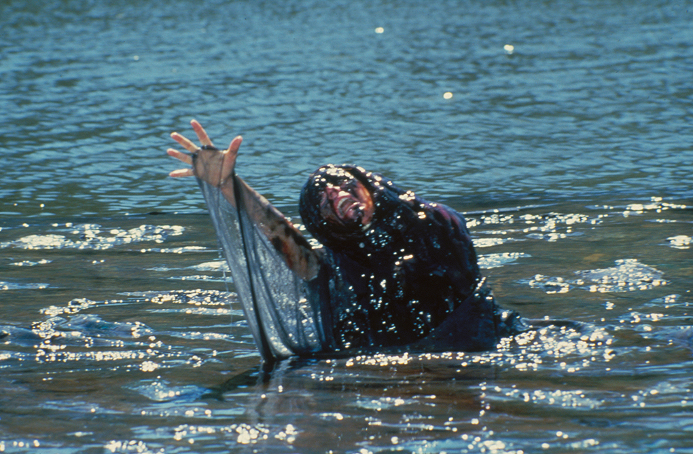

Summary
The story follows four college students Randy, Deke, Rachel, and
LaVerne who went on a trip to a remote lake to celebrate the end of
summer. Despite the chily weather they decided to swim out to a
wodden raft floating in the middle of the lake.
On the swim over there however one of the characters, randy, noticed
a black patch floating on the surface of the water not to far from
the raft, somewhat remenisant of an oil patch.
At first, they all dismiss it, but Randy notices that it moves
unnaturally, almost as if it has a mind of its own, and he grows
more and more weary of it's presense. As they stand on the raft,
observing the black substance, Rachel accidentally dips her hand
into the water... Instantly, the creature latches onto her, pulling
her in. Her body is dissolved and consumed before the others could
even react.
Panicked and horrified they realize they are trapped on the raft
with no exit as the entity continues circling them with murderous
intent, waiting for another opportunity to strike. They spend hours
in terror, watching as the mass of creature orbits them, reacting to
their movements and keeping them on their toes.
Deke, observing the entity's movements, notices it attempting to
squeeze under the raft. Believing this to be an opportunity, he
contemplates swimming to shore while the creature is beneath them.
Despite Randy's warning that he might not make it, Deke, confident
in his swimming abilities, decides to take the risk. However, before
he can act, the creature seizes him by the foot through a crack in
the raft's planks. Deke's foot is grotesquely pulled into the narrow
gap, causing him excruciating pain and leading to his gruesome death
as the entity pulls his body through the gaps in between the
planks.​
Left on the raft alone and scared, Randy and LaVerne are left with
no choice but to stay on the raft only having breif oppertunities to
rest while they take turns standing and watching the creature while
the other rests. As night falls they sit close together to stay warm
which leads them to "physical intimacy", LaVerne lying down on the
raft has a part of her hair reach the water and the creature latches
on to it and creeps up to her face and pulling her down in to the
water, now only Randy Remains.
Alone on the raft Randy is forced to stand up and keep an eye on the
creature, keeping his guard up at all times. However as time
progresses he grows exasted and fantisises of any kind of escape,
becomming more and more hopeless and giving in to his emotions. At
last he gives in and turns to the creature thinking there was no
hope for him and that the creature could set him free from his
suffering, he stared at it's hypnotising shimmering colors, this
time, he didn't look away.
movie
The Raft was also adapted to film as a segment of the 1987 horror
anthology movie Creepshow 2
Essentially everything in the movie is the same as the book with
primarily only the ending being changed for the film. In the movie
Randy ceases his opportunity to flee when the creature takes LaVerne
and he manages to swim ashore and escape the monster, or so he
thinks, since the creature suddenly becomes a wave that engulfs him
and drags him back into the water.
The monster taking one of the characters

OBS:
This website is not about the movie, it focuses on the original book writen by Stephen King, and these images are not from the book itself.
Characters
Randy (middle right)
Randy is the main focus of the book and we get a good insight in to
his thoughts, feelings and fears
He is a very observant and cautious, and is the first person to
notice the mysterious black substance
When the group panics by the imminent threat he tries to calm them
down and think strategically
Despite being close a close friend with Deke they do have some
tension between each other displayed by their frequent bickering,
subtitle fight over the girls affection and their self given place
in the group from their stereotypical characteristics where randy
dislikes being viewed as the "nerd" of the group
Deke (right)
Deke is athletic and confident representing the stereotypical jock
in the group
He tends to underestimate danger which we see when he believes he
can outswim the monster
Often acting fearless and making hasty decisions without concern for
the repercussions
LaVerne (left)
LaVerne is a sarcastic and edgy girl who often banters with the
group
She is emotionally fragile and is deeply affected by the death of
the others
She is the more streriotypically mean and gonfident girl of the
group that sides more with Deke
Rachel (middle left)
Rachel is kind and gentle with a curious side
She is the more quiet girl slightley representing the steriotypical
shy girl in the group
She is often open and supportive following the group and bringing a
calming presence